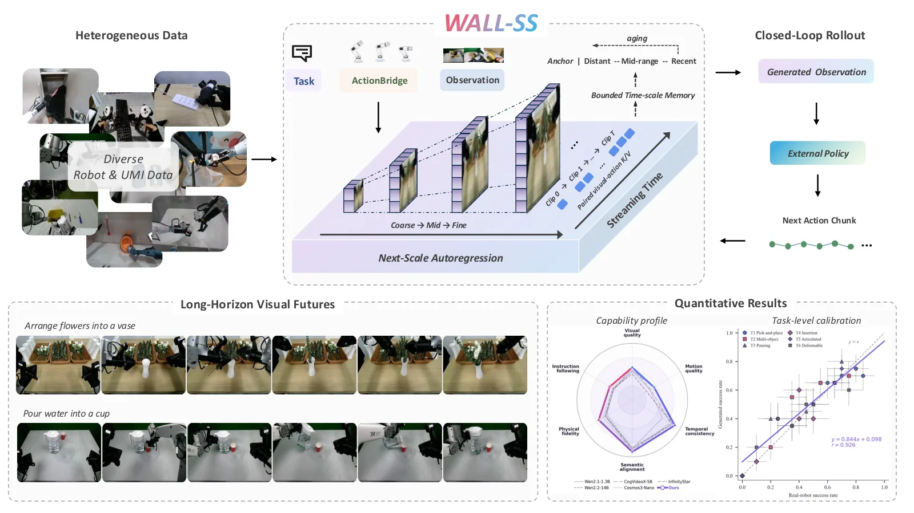
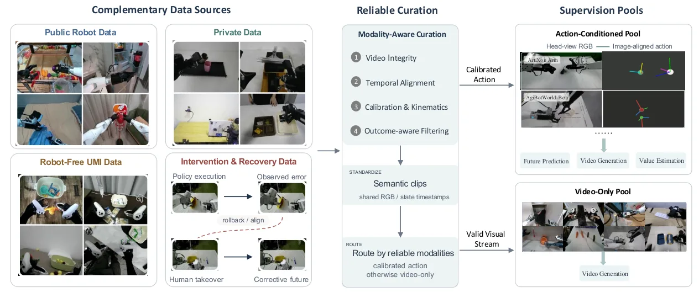
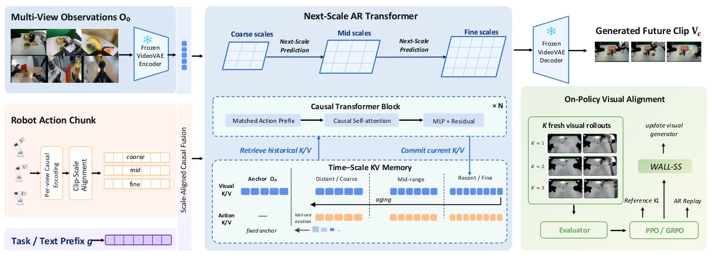
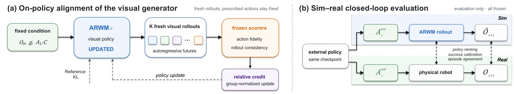
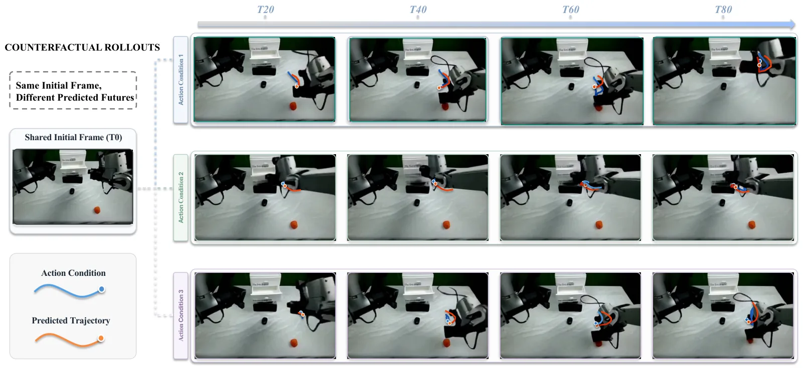
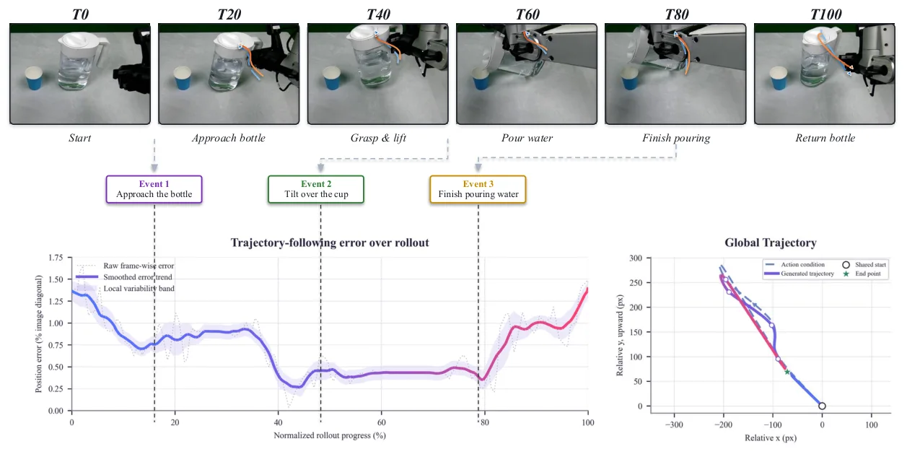

WALL-SS：用下一尺度自回归扩展长时域世界模型WALL-SS: Scaling Long-horizon World Models via Next-Scale Autoregression
A 级 robotic world model，明确面向长时域 action-conditioned rollout。
一句话工作总结
把动作条件、长时记忆和视觉未来预测统一起来，为从空间表征到具身规划提供世界模型桥梁。
半海报（待补全）
当前记录尚未达到完整海报质量门槛，暂不把摘要或评分理由冒充方法/实验结论。
待补字段：桥接价值、方法摘要、可迁移模块、关键证据与数字、边界与风险、下一步实验。下一次任务需从论文全文或官方 HTML 提取证据后再发布。
摘要
WALL-SS 将交错的观测—动作序列按尺度自回归生成，结合动作条件的下一尺度预测、尺度压缩长时记忆和 on-policy alignment，实现可变长度、流式扩展的视觉机器人世界模型。
Generative world models provide robots with predictive models of how the world evolves under interaction, with growing potential for simulation, planning, policy evaluation, and robot learning. Beyond clip-level future prediction, a unified generative formulation should relate actions to consequences, support flexible horizons and continuous interaction, and enable reward-driven optimization. We introduce WALL-SS, a world model that generates visual futures through Scale-wise autoregressive Scaling, enabling action-controllable and long-horizon robotic simulation. WALL-SS represents embodied trajectories as causal sequences of temporally interleaved observations and actions, making action-dependent state transitions explicit while naturally supporting variable-length generation, streaming extension through reusable causal states, and direct optimization through sequence probabilities. To make this formulation effective over long horizons, we generate each future observation in a coarse-to-fine manner and develop three complementary components within the same hierarchy. Action-conditioned next-scale prediction injects scale-aligned action representations to improve action-future coupling and model both successful and failed behaviors. Scale-compressed long-horizon memory retains recent interactions at fine resolution while compressing distant observations and actions, with scale-wise dream forcing enhancing robustness to self-generated context. Finally, on-policy alignment optimizes autoregressive visual dynamics with action-following and long-term consistency rewards while preserving the pretrained visual distribution. Experiments show that WALL-SS improves action following and trajectory accuracy, supports coherent minute-long streaming rollout under bounded memory, and consistently benefits from on-policy alignment in reducing action drift and long-horizon inconsistency.
图表/页面预览
{kind=link}

{kind=link}

{kind=link}

{kind=link}

{kind=link}

{kind=link}
